本教程针对纯零基础、使用国内安卓手机 + 电脑的用户设计，严格按照真实操作闭环梳理：先解决基础网络与工具安装 → 再搞定合规美区账号 → 深度伪装环境与自然养号 → 最终通过 Google Play 内购安全订阅。
没有绝对防封的办法，我们只能做好能做的，降低封号风险
我的账号在国庆封号潮期间开通，现在已稳定使用一个月

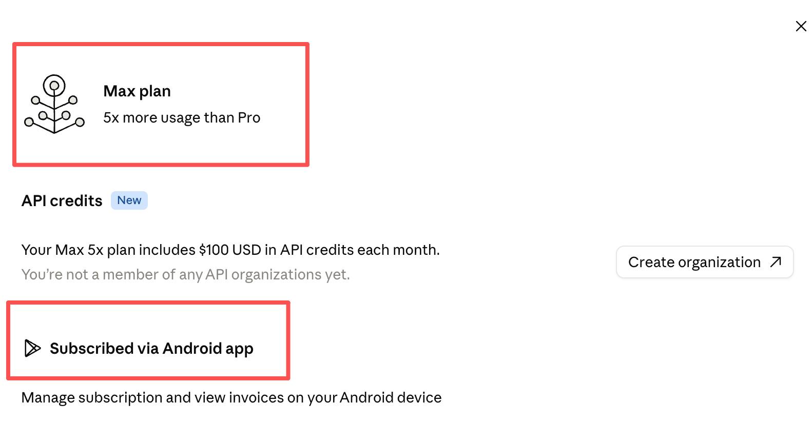
很多新手使用 Claude 被封号，大多不是因为支付问题，而是由于使用劣质机房节点、手机/电脑真实位置泄露（DNS/WebRTC 穿透）、使用批量机刷注册的垃圾邮箱、或新账号未经过正常交互就直接大额付费触发了系统的反欺诈风控。
教程较长，遇到问题请留评论
阶段一：科学上网与下载Google Play
很多新手最开始连外网都无法访问，无法直接从应用商店下载海外工具。请严格按顺序执行以下操作：
科学上网（已有可跳过）
这一步是搞定访问外网下载软件，一定搞定科学上网的跳过这一步。
下面是我自用的一个代理站点CGMAX，需要邀请才能注册，所以比较稳定。
只购买一个月用来连接外网，后面使用 claude，使用我们自建的 VPS 代理。
放了几个邀请码，如果都用完了，可以找我拿邀请码
https://uo9i3ozh3pqnm8.cgmax.net/#/auth/register?code=NVbp08cO
https://uo9i3ozh3pqnm8.cgmax.net/#/auth/register?code=4n4QiK56
https://uo9i3ozh3pqnm8.cgmax.net/#/auth/register?code=V5LbSuRu
https://uo9i3ozh3pqnm8.cgmax.net/#/auth/register?code=lI5etZsd
https://uo9i3ozh3pqnm8.cgmax.net/#/auth/register?code=rMRWfYGI
https://uo9i3ozh3pqnm8.cgmax.net/#/auth/register?code=uPfo4kRO
https://uo9i3ozh3pqnm8.cgmax.net/#/auth/register?code=WNd1SeGq
大家用了哪个邀请码，可以勾选添加一个评论，方便其他人

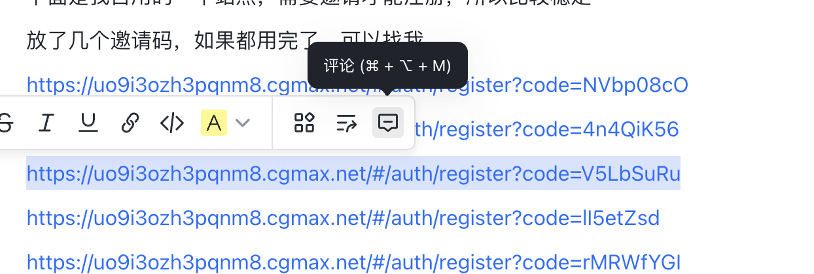
购买后在CGmax官网仪表盘页面拿到订阅链接
安卓手机安装代理工具与开启连接
- 下载安装包
安卓手机在CGMAX官网文档页面下载FIClash

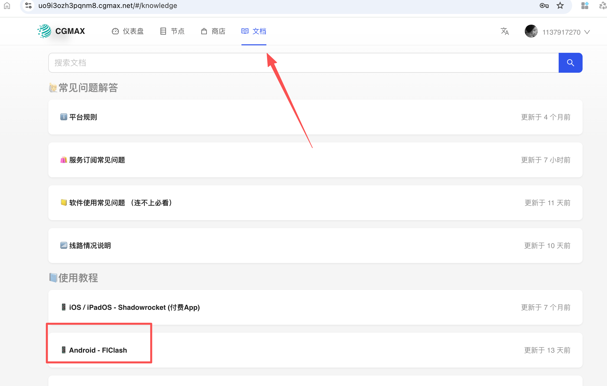
- 导入节点：打开 FlClash，点击「配置/Profiles」→「新配置」→ 选择从 URL 导入，将准备好的代理订阅链接粘贴进去并保存下载。
- 开启代理：在代理页面选择一个美国或海外节点，在仪表盘页面点击启动按钮开启连接。
- 验证连接：打开手机浏览器，访问
google.com，确认可以正常打开海外网页。
电脑安装代理工具与开启连接
电脑端在https://github.com/clash-verge-rev/clash-verge-rev/releases下载 clash verge

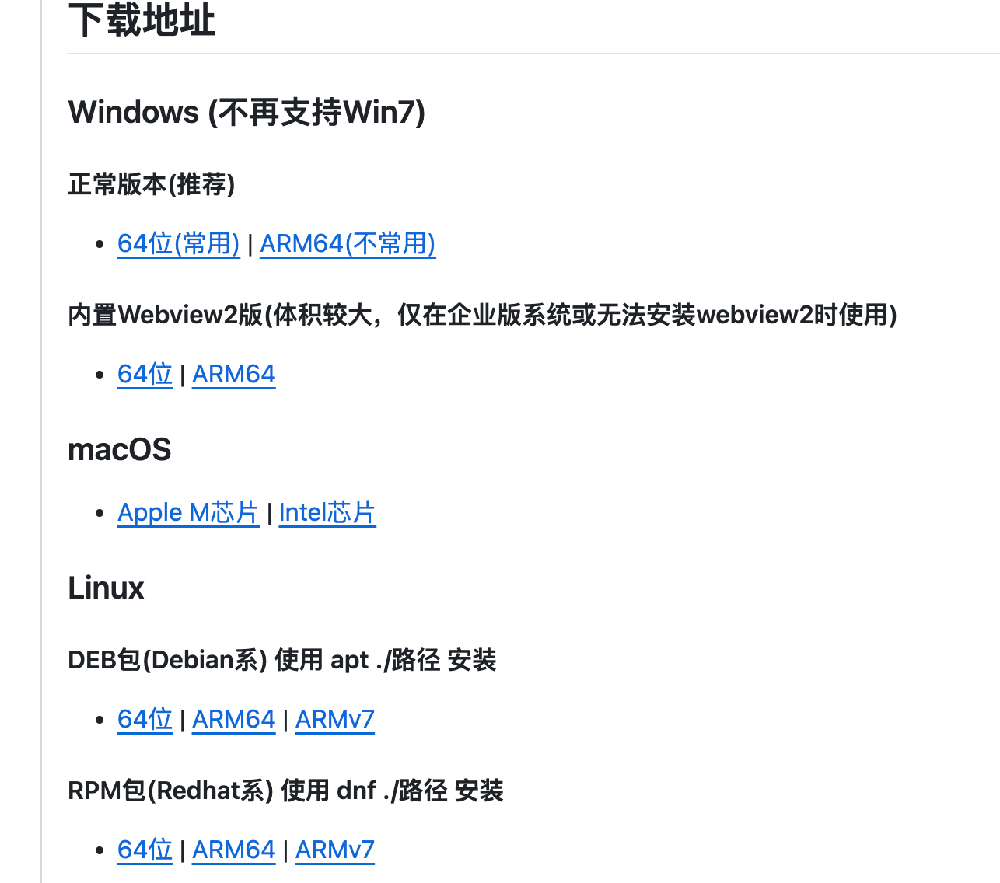
把 CGmax官网仪表盘页面拿到的订阅链接 粘贴到这里 导入订阅链接

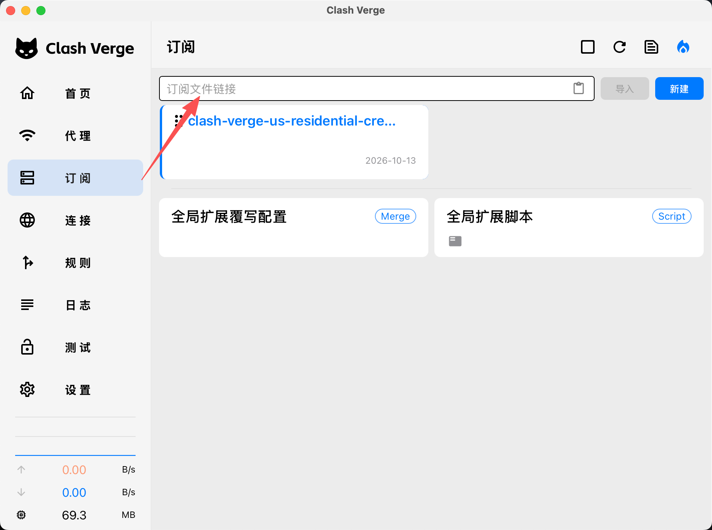
在设置页面开启虚拟网卡模式

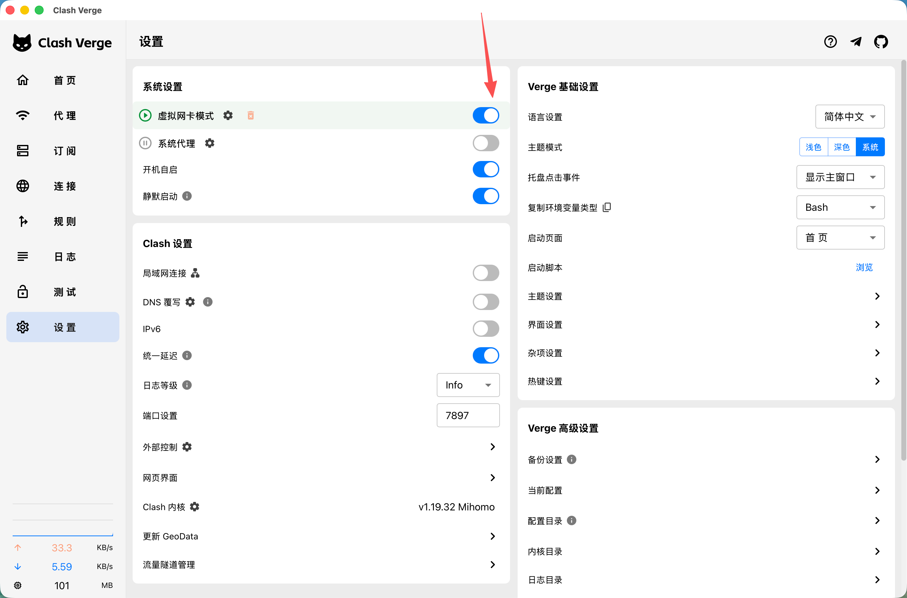
在电脑浏览器访问 google.com，确认可以正常打开海外网页。
安卓手机安装 Google 框架与 Gmail / Google Play
国内主流安卓机（除部分特殊机型）系统底层通常内置了谷歌服务架构，但桌面没有预装商店：
- 安装Google play
在应用商店搜索“Google play”, 能搜到就直接安装,我老婆的vivo在应用商店可以直接安装
搜不到的话就在手机设置搜索谷歌，找到谷歌服务并开启

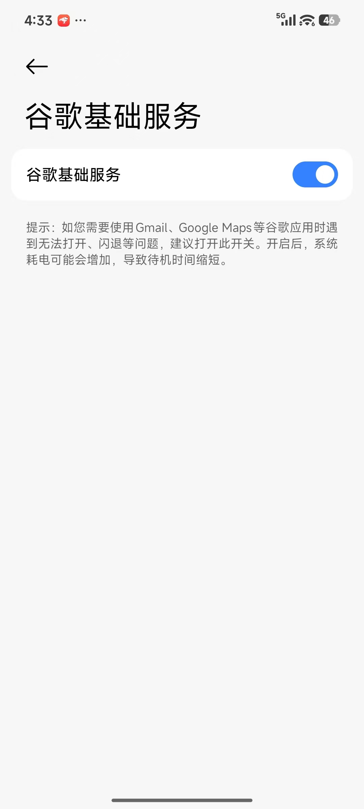
应用商店没有Google play商店的就下载安装这个apk安装包
Google Play 商店安装包
53.5.48-24 · Android 7.0+ · 105.6 MiB
原文附件，文件名标注来源为 APKMirror
查看原文件名与校验值
com.android.vending_53.5.48-24_0_PR_995634172-85354800_minAPI24(arm64-v8a,armeabi-v7a,x86,x86_64)(nodpi)_apkmirror.com.apk
SHA-256
0bc9e6583236430c96ad2aa0cee5a3aa8b08bee298e421bab0bdac0a4bc53532- 下载基础应用 APK：
安装好Google Play后，打开搜索Gmail并安装，两个App长这样，别下错了
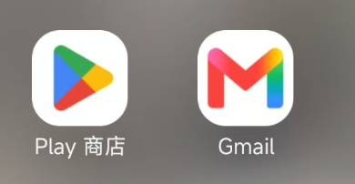
点击图片可放大查看

阶段二：获取一个干净合规的 Google 账号
严禁使用几块钱批量机刷的廉价邮箱，这类账号不仅容易被 Google 批量封号，更容易直接连累 Claude 触发秒封。
方案 A：通过手机 Gmail App 自行注册（推荐）
- 保持手机Flclash代理连接（选择美国节点）。
- 打开刚才安装好的 Gmail App。
- 账号列表拉到底,点「添加其他账号」

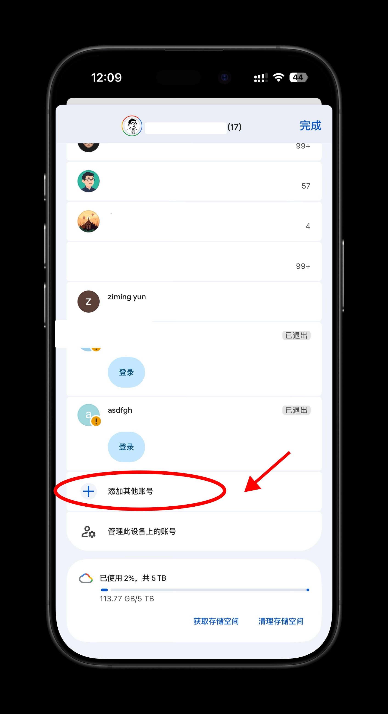
- 选择「Google」

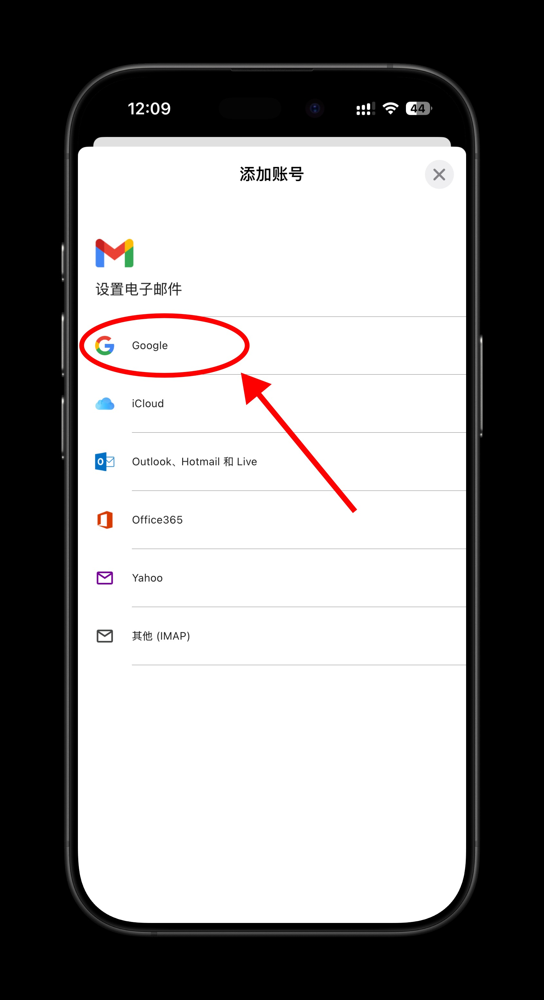
- 登录页别填邮箱,点左下角「创建账号」

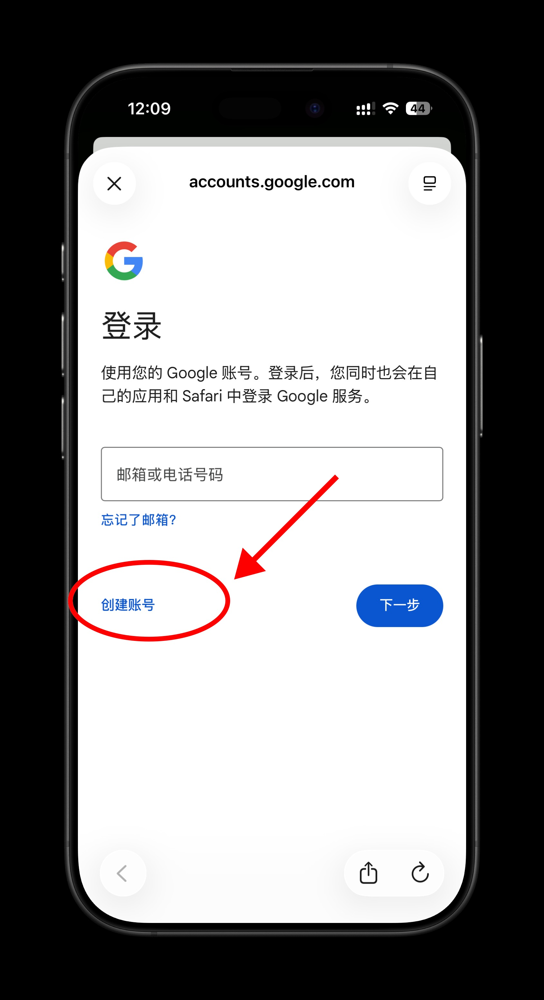
- 填姓名(姓可选填,名字像真人)

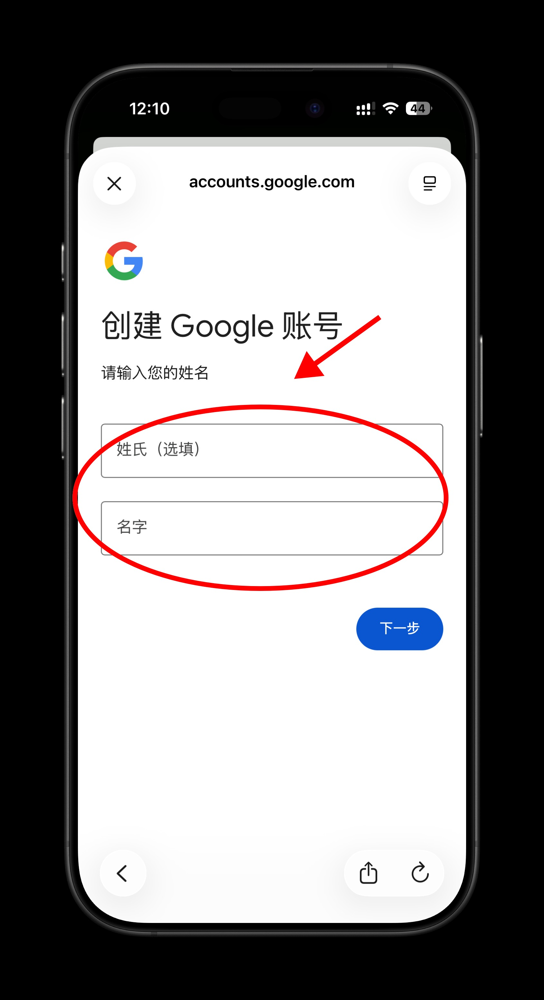
- 填生日和性别(设成年人,否则触发未成年额外验证)

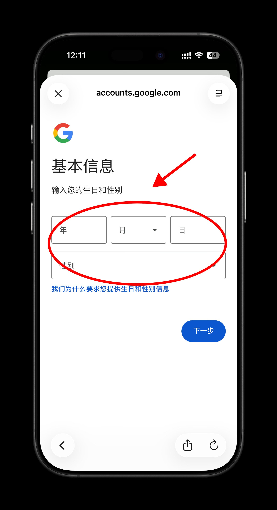
- 选系统推荐的、或自己创建 Gmail 地址
创建一个邮箱
○ 选择系统推荐的 Gmail 地址
○ 创建您自己的 Gmail 邮箱
选择其中一项后，点击「下一步」。
- 设密码(字母+数字+符号,勾"显示密码"核对)

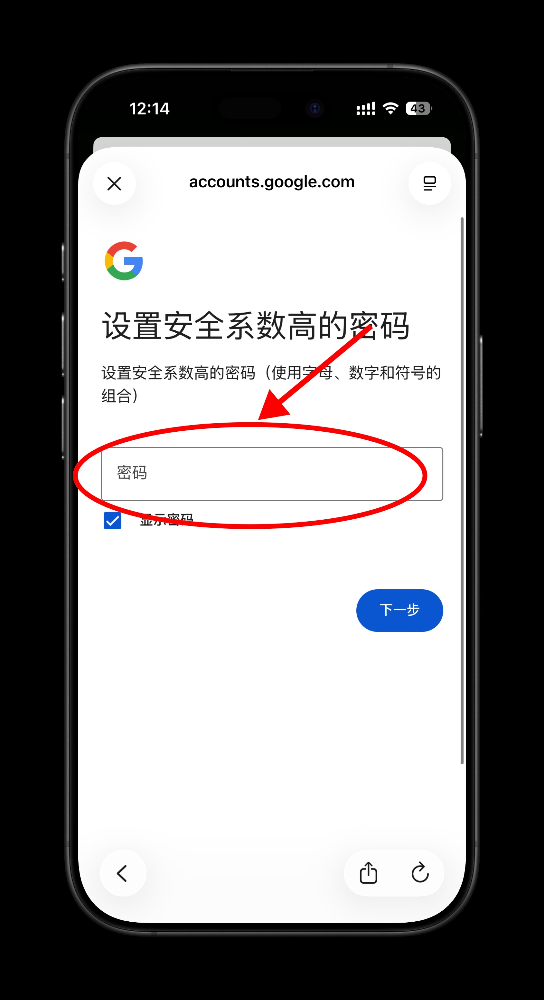
- 输入电话号码验证

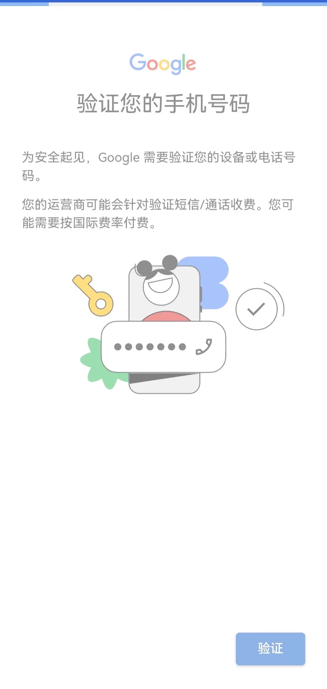
若国内手机号提示“此电话号码无法用于验证”或发不出短信，可以尝试换一个从未绑定过谷歌账号的手机号试试
如果还是不行只能转走方案 B。
- 同意隐私条款 → 完成

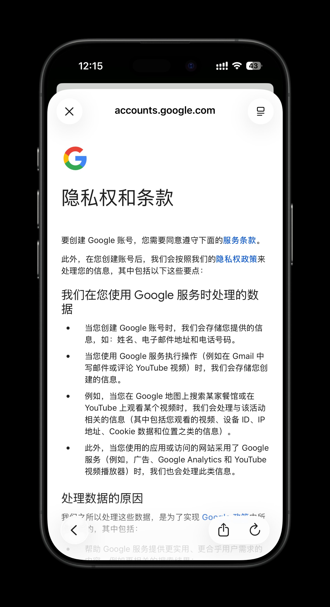
方案 B：购买人工纯手工注册的成品号（备选）
- 在可信平台（如淘宝、闲鱼等渠道）寻找成品账号。
- 在这些网站购买成品号，最好买贵点，我买过一个十几块的，用了几天，谷歌给我封号了
- 避坑红线：
- 绝对不要买几块钱的便宜号，这类 100% 是脚本批量扫号注册，极不稳定。
- 明确要求商家提供“纯手工一机一号注册”的独立账号。
加固账号
- 拿到账号后，第一时间在浏览器登录 Google 账号管理后台 https://myaccount.google.com/。
- 立即绑定你自己的辅助邮箱，修改登录密码，并开启两步验证（2FA），添加辅助邮箱，辅助手机号（这一步可以让AI教你）

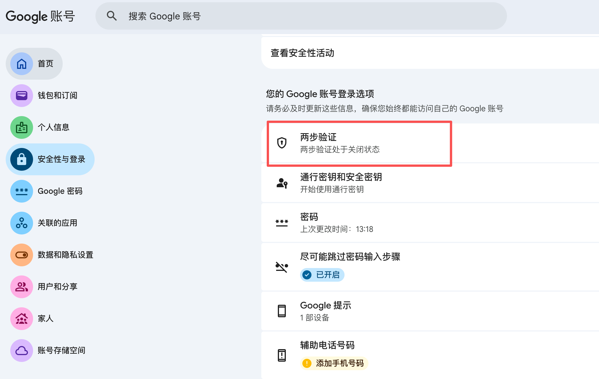
- 设置语言为英语，地址填一个美国免税州地址，https://usaddressgen.com/tax-free-address/, 可以用美国免税州地址生成器

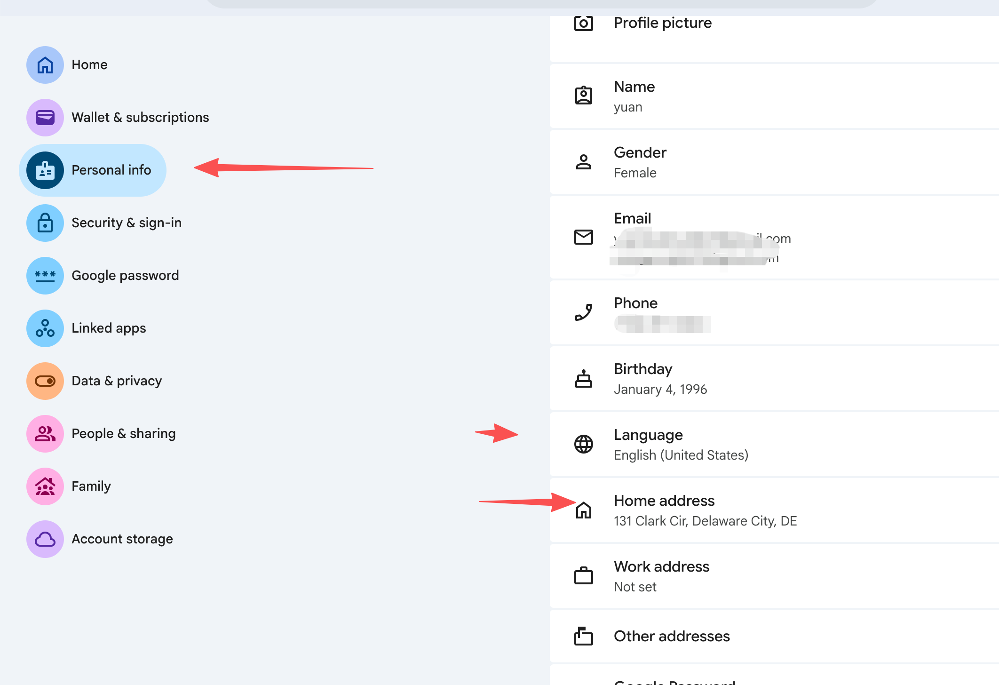
- 打开https://policies.google.com/country-association-form，确保你的谷歌邮箱是必须关联在美国
Your account is associated with:
United States - California
美国 · 加利福尼亚州
如果不是，可以申请切换到美国
打开 Google 付款中心 →「设置 → 付款资料」：
- 「国家/地区」必须显示 美国 / United States

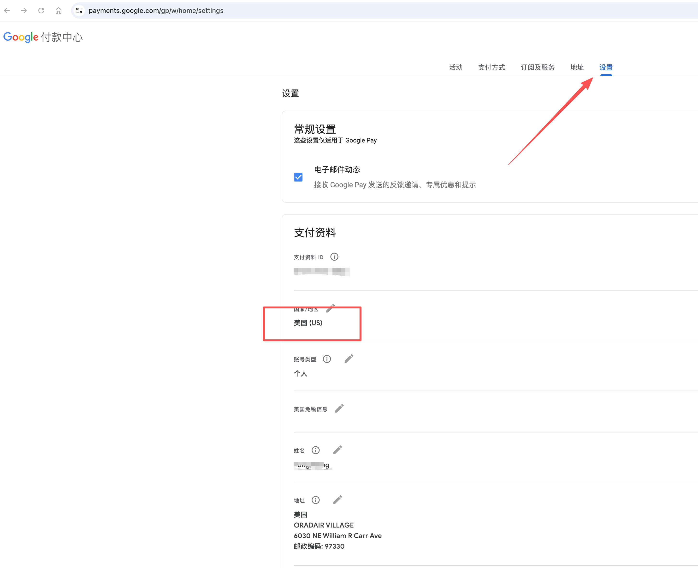
手机上打开「Play 商店 → 头像 → 设置 → 常规 → 账号和设备偏好设置 → 国家/地区和个人资料」，确认当前使用的地区必须是美国。

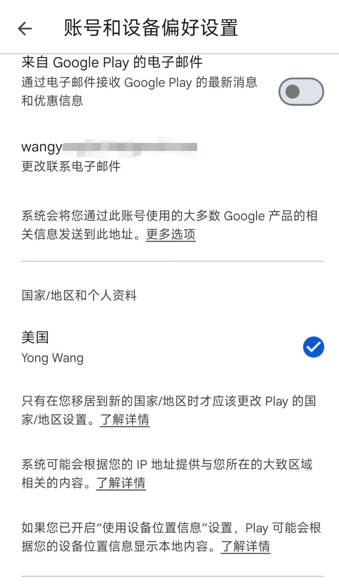
到此，谷歌账号的设置就完成了
养号
偶尔打开youtube.com刷刷视频，像个正常用户。自己注册的账号养两三天，买的成品号养一周左右，我买过一个成品号养了一周左右，被谷歌封了，因为号是机器批量注册的。
阶段三：搭建美国独享静态住宅网络（长期防封核心）
cgmax代理仅用于前期下载和注册过渡。要保证 Claude 长期稳定不封号，必须使用独享的美国静态住宅 IP，彻底避开万人共享的机房 IP（Data Center IP）。
购置与部署美国住宅 VPS
我买的是诺联VPS https://novixlink.com/aff.php?aff=571 他们家的ntt 双ISP住宅IP中国优化VPS

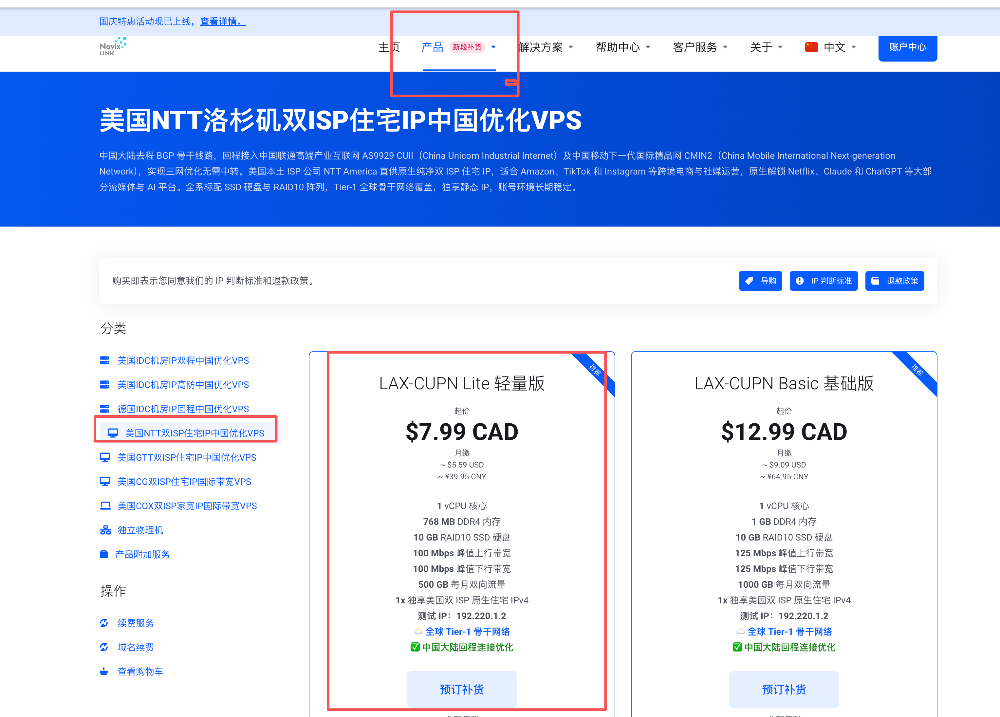
一年 300 块，平均每个月 25 块，我买来用了快一个月了，每个月 500G流量，网速也够，看youtube 1080p视频流畅
买完之后进入我的产品页面

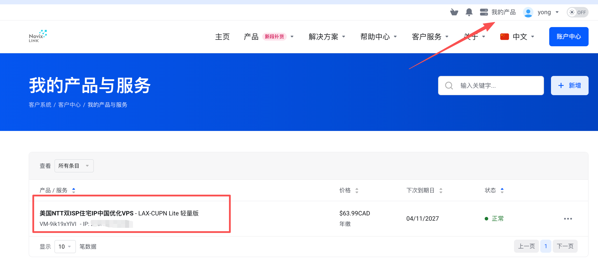
点击产品进入详细信息，这里下面红框里的东西就是连接服务器的账号密码，后面截图发给AI

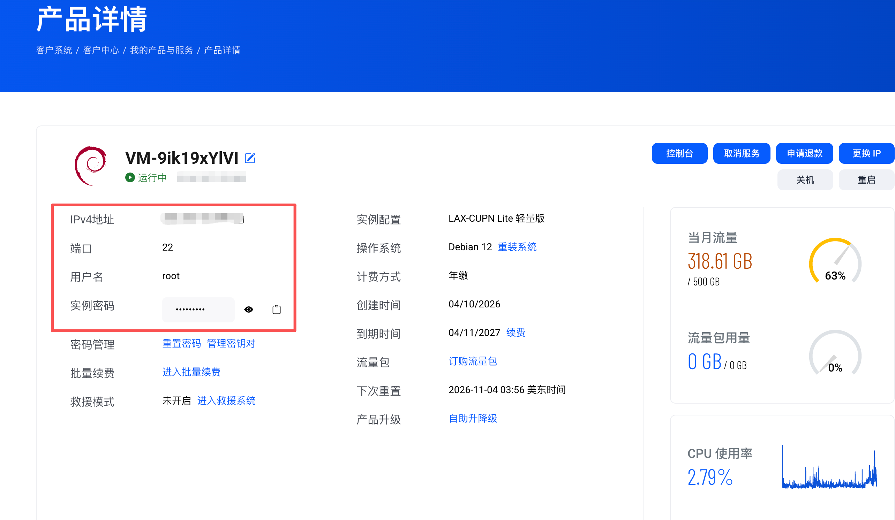
配置电脑端与手机端客户端
这一步先确保你已经安装了clash-verge和Flclash。
把下面这段提示词还有你买的这个服务器，它的IPV4 地址，用户名，实例密码截个图（参考上图），一起复制给你的codex或者是workbuddy，反正能操作你电脑的AI Agent都可以。这里尽量选择优质一点的模型来跑这个任务，笨蛋模型可能会搞错。
截图是我购买的美国服务器连接信息。电脑已安装 Clash Verge，安卓手机使用 FlClash。我是新手，请直接完成服务器代理搭建、电脑配置和手机扫码导入，先备份并保留原配置，不要只给教程。
电脑端请自动导入并启用新配置、选中美国节点，关闭 IPv6 和 DNS 的 IPv6 解析，开启虚拟网卡 TUN、自动路由、DNS 接管、开机自启和静默启动。处理必要权限及现有代理冲突，确认设置已保存并实际生效。
请做好分流：微信、抖音、小红书、B站、支付宝等国内常用服务和局域网直连；其他海外服务一律走美国节点。海外代理策略不得在故障时回退直连，国内服务仍应正常直连。
完成后实际验证两类结果：国内服务正常直连；海外服务的 IPv4、DNS 和 WebRTC 公网出口经过美国节点，没有意外暴露本地中国运营商的公网 IP，并确认 IPv6 不会绕过代理。
配置并测试断线保护，核查节点故障、关闭 TUN、退出客户端时，海外流量是否可能回落直连。不能实现或没有实测的保护要明确说明，不要仅凭开关状态宣称无泄漏。
安卓端使用同一服务器和相同分流意图，生成一个扫码即可导入完整配置的二维码，自行处理下载地址、兼容性和规则依赖，避免缺少 GeoSite 等规则库导致导入失败。手机端只交付二维码、简短扫码步骤和有效期，不要求我复制链接或传文件。
技术细节和报错你自行处理。最后简短列出已验证结果、待验证项目和恢复方法；需要本人授权或手机实测时，集中告诉我最少的操作步骤，不要把电脑测试当成手机验证。AI 会帮你自动配置安装代理，配置clash verge。完成以后还会给你一个二维码，后面配置手机Flclash的时候会用到。
配置完成以后，你可以在你的clash Verge里面看到新增的订阅

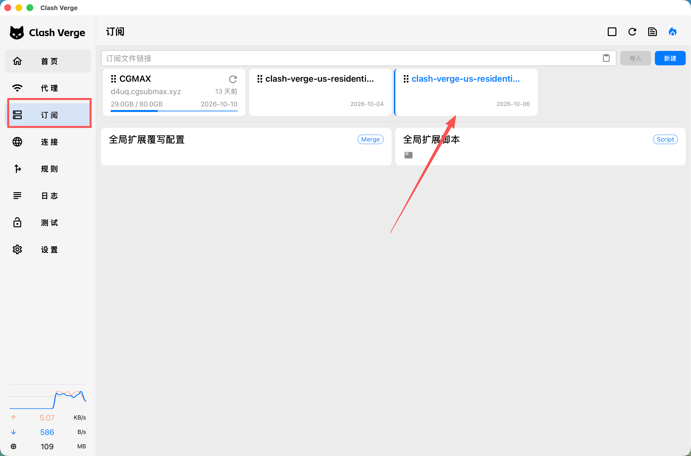
然后在设置里面一定配置成我这样。
开启虚拟网卡模式。开机自启。静默启动关闭IPV6。

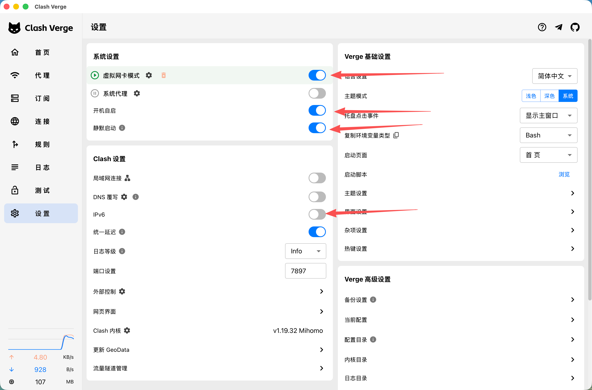
打开 https://ipcheck.ing 检测
- 必检项 1（IP 属性）：归属地必须为美国
- 必检项 2（DNS 解析）：所有 DNS 节点必须显示为美国本地，严禁出现国内运营商 DNS 泄露。
- 必检项 3（WebRTC 状态）：确认已关闭或无真实内网/外网 IP 泄露。
必须这里所有的IP出口都是显示美国。IP, WebRTC，DNS有任何一个显示是中国都不行。
铁律：只要检测有一项异常，坚决不要打开 Claude 官网。

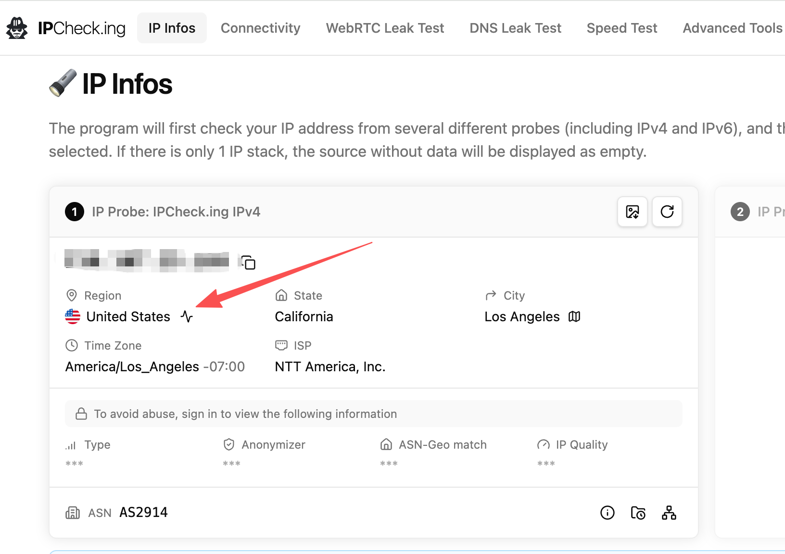

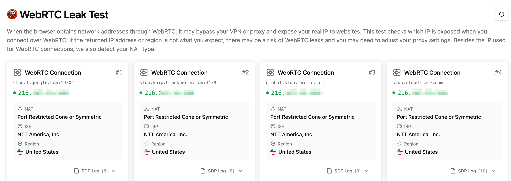

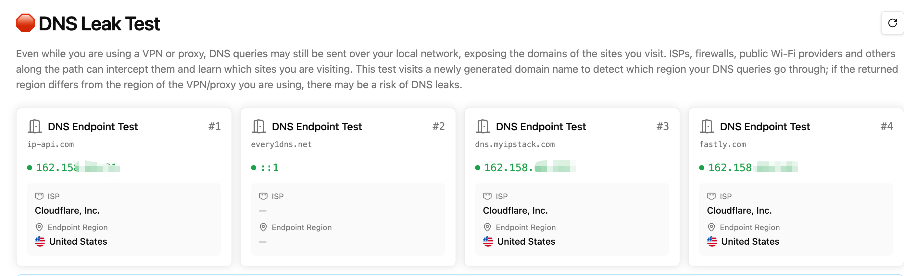
下面设置手机
手机上打开flclash。点击配置，添加配置然后扫描上面AI生成出来的一个二维码。

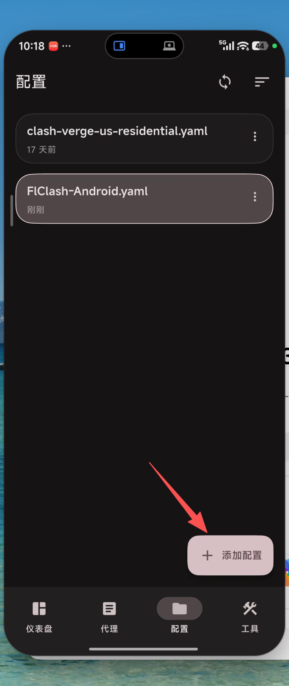

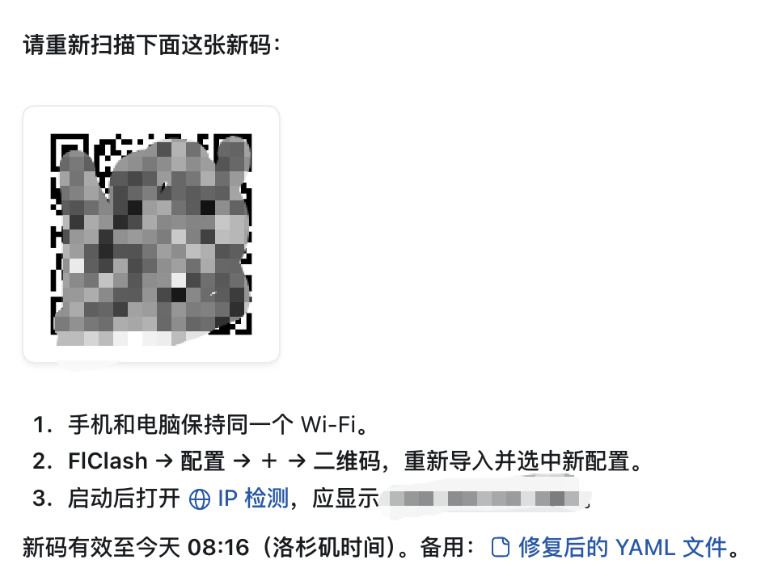
在flclash仪表盘页面开启代理，浏览器打开 https://ipcheck.ing 检测，IP，DNS，WebRTC也必须保证都是美国ip


阶段四：电脑端本地环境深度清理与对齐
这一步的目的是让我们的电脑更像一个真实的美国人在使用。
把系统语言设置英语
清理我们电脑上的Claude痕迹，将IP和时区对齐，关闭定位功能。
下面这段提示词发给Codex或者workbuddy。
请实际检查并配置这台 macOS 或 Windows 电脑，使系统语言、地区格式和时区与当前美国 IP 出口相匹配，采用常见的美国本地化设置。沿用现有网络，不改动代理或路由。
先只读检查，列出需要修改的设置、准备清理的准确路径和条目，以及影响和恢复办法，等我回复“执行”后再操作。
需要完成：
1. 系统显示语言和首选语言设为 English (United States)，地区设为 United States；常用浏览器各配置文件的首选语言也设为英语（美国），保留中文输入法。
2. 核对并设置美国常用的日期、时间、数字、美元货币、华氏温度、度量单位和每周起始日格式。
3. 根据美国出口所在城市设置对应的正式时区，确保能自动处理夏令时。关闭自动时区定位，保持系统时钟准确；出口城市不明确时先确认，不猜测时区。
4. 关闭系统定位服务和浏览器的网站定位权限。macOS 同时检查系统服务中的“设定时区”定位项，Windows 检查位置访问及自动时区设置，并说明相关功能影响。
5. 检查 Claude 的旧配置、缓存、登录残留和相关环境变量，包括 macOS 的 ~/.claude、Windows 的 %USERPROFILE%\.claude。macOS 还要检查钥匙串，Windows 检查凭据管理器。仅清理确认无用且获准删除的条目，保留无关数据，不读取、展示或记录密码与令牌。
完成后重新读取设置，用简短表格列出修改前后、验证结果、未完成事项和恢复方法。需要管理员认证时由我本人输入密码；不要把修改配置文件当成设置已经生效。阶段五：Claude 网页端初次接入与合规养号
严禁新号一注册就立刻付费，这在风控系统眼里属于典型的高危盗刷欺诈行为。
我的经验：每次使用前我都会检查我的所有IP出口都是美国。使用完成我就会关闭claude网页，claude code。避免万一代理断网导致中国IP直接访问claude。
- 登录平台：
- 通过
ipcheck.ing自检，确保所有的IP出口都是美国。 - 打开https://ip.net.coffee/claude/ 做Claude AI IP 风险检测，参考我的检测结果，全部为绿就可以正式第一次打开claude ai网页了
- 通过

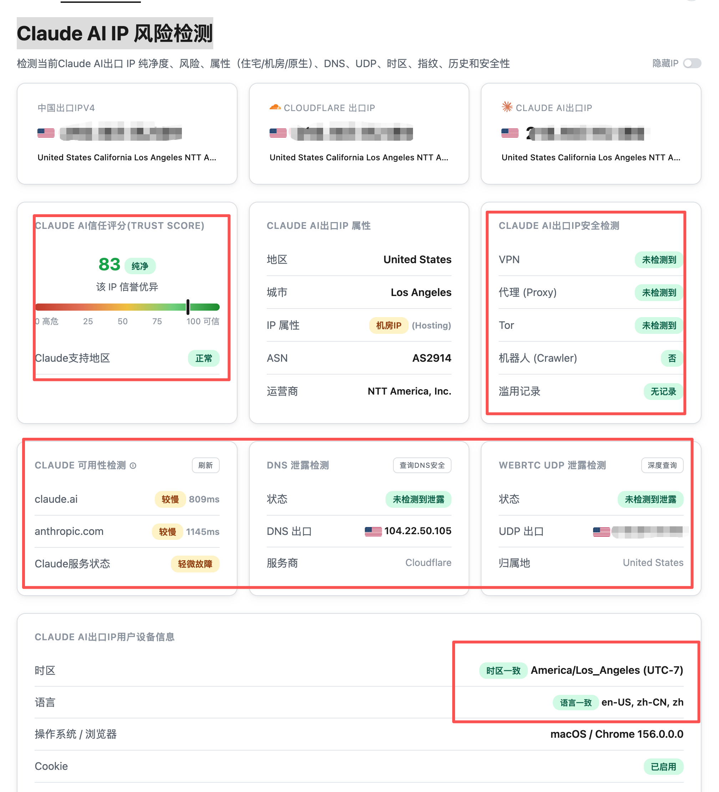
- 访问
claude.ai，选择 Continue with Google，使用准备好的 Gmail 授权登录。
- 自然拟真交互（养号 2 天）：
- 正常使用免费额度与 Claude 对话（可以提问日常工作、写文案、查代码等，支持中文输入）。
- 连续使用 2 天，且每天自然地把系统分配的免费额度用完。
- 底层目的：在后台建立起“高活跃、强需求但受限于免费额度”的合规真实用户画像，为后续自然升级付费做好铺垫。
阶段六：手机端 Google Play 绑定与 Pro 阶梯式订阅
通过安卓手机端 Google Play 内购走中间层隔离，是目前成功率最高且最安全的路径。
绑定 Google Play 美区支付方式
- 安卓手机打开 FlClash，连接同一条美国独享住宅节点，手机打开浏览器确认
ipcheck.ing指标全部正常。
- 打开 Google Play 商店，登录该 Gmail 账号。
- 点击右上角头像 →「付款与订阅」→「支付方式」→「添加信用卡或借记卡」。

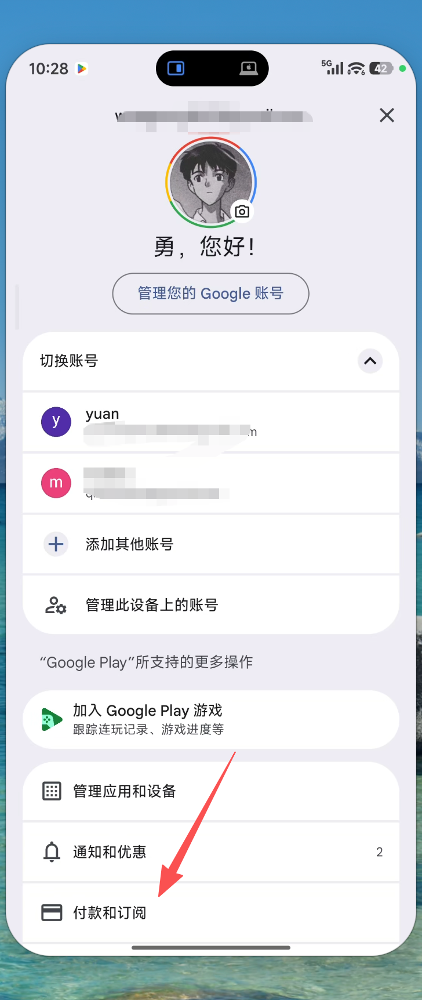

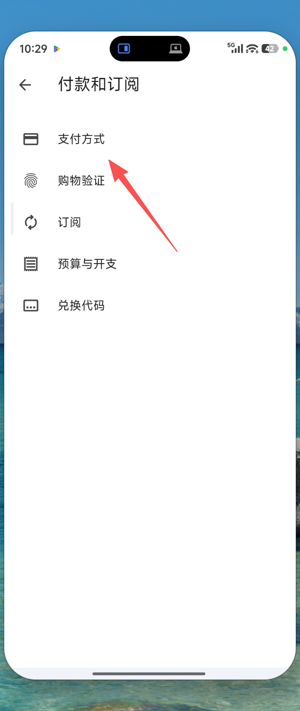
- 绑定国内全币种/双币信用卡（如招商银行 Visa / MasterCard）。
我办理的是招行的全币种VISA信用卡
中间层优势：Anthropic 只能看到这笔交易由 Google Play 官方扣款完成，无法探测到底层国内银行卡的真实发卡行信息。
- 账单地址建议填写美国免税州或洛杉矶真实街道和对应邮编。
可以用这个来生成免税州地址 https://mockaddress.com/
下载 Claude App 并完成升级
- 在 Google Play 商店内直接搜索并下载官方 Claude 客户端。

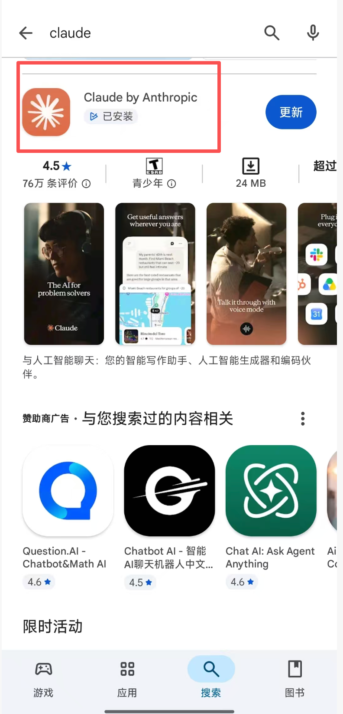
- 打开 App，登录你的 Claude 账号，先在手机端简单提问 1~2 个日常问题。
- 进入设置，点击 Upgrade to Pro。
- 支付渠道选择刚才绑定的 Google Play 进行扣款，顺利开通 Pro 权限。
阶段七：长期稳定进阶与更高套餐升级（Max / Team）
- Pro 稳定过渡期（1 周）：
- 开通 Pro 后的前 7 天，严格保持在固定的美国独享住宅 IP 下使用，保持单机单 IP，不要在短时间内频繁跨国、跨城市更换节点。
- 平滑升级 Max：
- 稳定使用 Pro 超过 1 周且账号无任何异常后，如有更高算力或上下文额度需求，可直接在官方设置中阶梯式升级为 Max。
- 此时账号已经通过了完整的信誉验证期，封号概率极低。
重点防封使用守则（必读）
- 用完立即关闭标签页（防后台静默探测）： Claude 网页版具有后台状态轮询机制。只要你切到别的标签页再切回来，它都会自动向服务器发起探测请求。使用完毕后，务必顺手关闭 Claude 网页标签页，杜绝电脑断网重连时网页在后台裸连暴露国内真实 IP。
- 牢记使用顺序： 每次使用前，必须先打开
ipcheck.ing确认环境正常（美国住宅 IP + 无 DNS 泄露），然后再打开claude.ai。 - 严格一号一线： 固定使用专属的静态住宅 IP，不要将此账号切到普通机场的共享节点上登录。